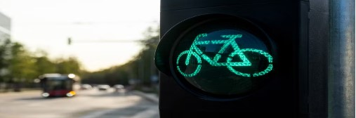
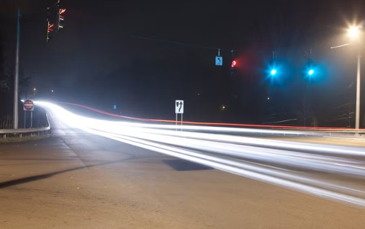
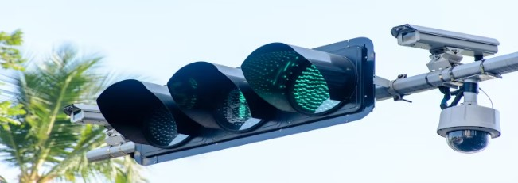
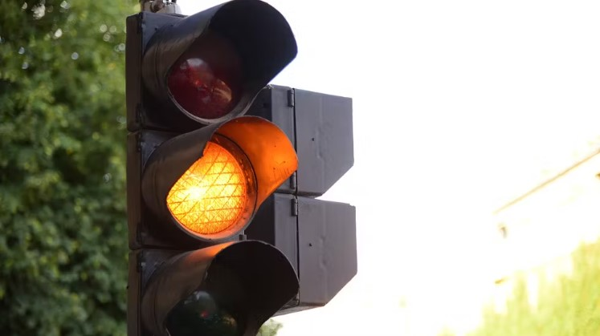
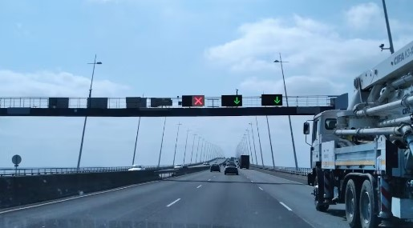
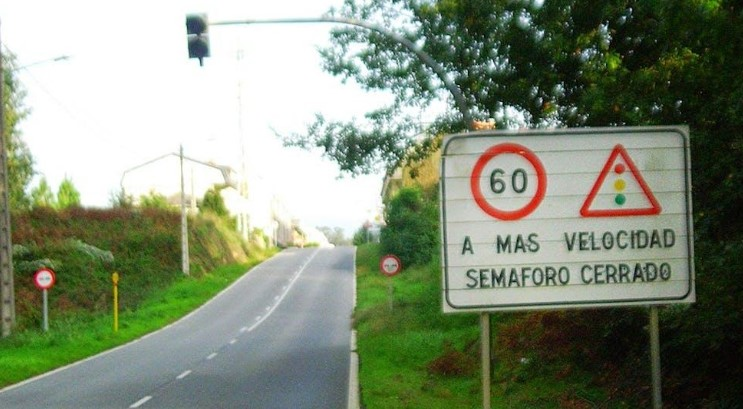

Búsqueda de información del semáforo
- Una o dos tablillas de practicas de electronica
- 4 interruptores(de cualquier tipo)
- 2 C.I 7404
- 1 C.I 7408
- 3 C.I 7411
- 1 C.I 7421
- 3 C.I 7432
- cable para redes de computación(de referencia de un solo alambre por color
- 1 pilas de 9 volts con su portapilas
Tipos de semáforos:
Semáforo peatonal:
Este tipo de semáforo es el más común que existe,se limita a coordinar el paso de vehículos y viandantes.
A los vehículos les indicará si pueden pasar o no con una luz circular verde o roja, y en algunos casos amarilla fija, que significa que deben detenerse a no ser que ya se encuentren en mitad de la intersección
Cuando en una intersección hay posibilidad de girar a la izquierda o la derecha, dentro del círculo podrá haber una flecha en verde o en negro con fondo amarillo que te indica que en esa dirección en particular sí puedes continuar, mientras de frente no y para los peatones se representara todo a traves de un muñequito que saldra en el semaforo.
Semáforo reservado a determinados vehículos:
Son semáforos que regulan el paso de un vehículo concreto. Los más comunes son los que cuentan con una silueta de bici, que corta o da paso a este vehículo. Son muy comunes en ciudades donde hay carril bici paralelo a las vías o en ciudades en las que los ciclistas muchas veces olvidan que no dejan de ser conductores y deben obedecer los semáforos normales.
Los semáforos inteligencia
Este tipo de semáforos,los inteligentes,existe en zonas en las que se debe priorizar la agilidad del trafica por ser áreas con poca afluencia de peatones
De esta forma, para que el semáforo en rojo se active y detenga la circulación, el peatón deberá pulsar un botón para que su luz se ponga verde y la de los coches roja; de lo contrario el semáforo para vehículos seguirá en verde y los peatones no podrán cruzar la vía.
Semáforos con cámara
Este es el tipo de semáforo pensado para controlar el tráfico de una forma más eficiente.Los semáforos con cámara controlan el comportamiento de los conductores que se aproximan.Así,cuando el semaforo se cierra,si un coche o una motocicleta ignoran la prohibición de avanzar,la cámara tomará una imagen de esta infracción para que se lleven a cabo las medidas disciplinarias oportunas.Normalmente estos semáforos se encuentran instalados en lugares donde se alcanzan altas velocidades o en los que hay muchas infracciones reiteradas.Además,se notifican con una señal física para que el conductor quede avisado de su presencia.
Las cámaras de este tipo de semáforos también pueden ir conectadas a un radar de velocidad. De este modo, la cámara no sirve solo para sancionar a los vehículos que se los saltan cuando están en rojo, sino también a aquellos vehículos que van demasiado rápido cuando están en verde
Semáforo con amarillo intermitente
Además del rojo y el verde, el semáforo para vehículos tiene un tercer color en la inmensa mayoría de casos: el amarillo o ámbar. Cuando el color ámbar está parpadeando sirve para advertir a los conductores de que deben extremar la precaución.Si el conductor observa una luz amarilla intermitente deberá ceder el paso a vehículos si lo que se abre es un nuevo carril, o a los peatones, si éstos empiezan a cruzar la vía en ese punto
Semáforo para tranvía
A parte de los semáforos con el sistema de colores para vehículos, existen también semáforos especiales para tranvías y autobuses de líneas regulares. Estos semáforos tienen una franja blanca iluminada sobre un fondo circular negro y la orientación de la franja indicará una cosa u otra
¿Qué significa cada configuración?
- Línea horizontal: prohibido el paso.
- Línea vertical: permite el paso de frente
- Línea oblicua hacia la izquierda o derecha: permite el paso a izquierda o derecha
- Línea oblicua intermitente: los vehículos que hemos mencionado deben detenerse como si se tratara de una luz amarilla fija.
Semáforos de carril
on semáforos cuadrados que se encuentran encima de un carril y sólo afectan a los vehículos que van por ese carril en particular.En este caso, la luz no es circular. Tiene una flecha verde que da paso, una flecha amarilla o blanca oblicua mirando hacia abajo que indica que hay que cambiar de carril, o una cruz roja que indica que no se puede circular por ese carril.
Semáforo ámbar como reductor velocidad
Son semáforos asociados a un paso de cebra que se suelen situar en las avenidas de entrada a las ciudades o pueblos.Concretamente se ponen en zonas limitadas a velocidad urbana,pero en las que vehículos suelen ir demasiado rapido.Su misión es la de forzar a reducir la velocidad
Funcionan conectados a un radar de velocidad, de modo que permanecerán en color ámbar de manera fija (lo que obliga a detenerse) hasta que el vehículo adapte una velocidad adecuada, momento en que empieza a parpadear, dando paso al vehículo extremando precauciones.
Suelen ir anunciados unos metros antes por un cartel como el de la foto que hemos cogido prestada de Forocoches:
Esperamos que te haya gustado este artículo sobre los diferentes tipos de semáforos que existen
Webgrafía:https://www.onroad.to/teorico/clases-autoescuela/se nalizacion/semaforos